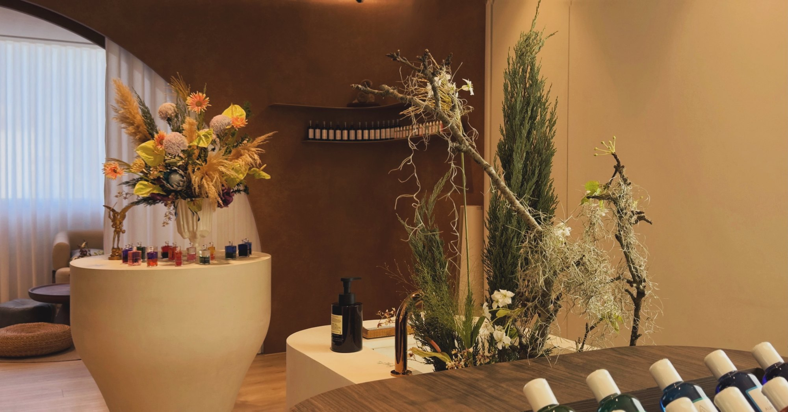

CHIU.FLORIST 是一間位於台中的花藝工作室，以「The Art of Florals and Spaces」為名，從花藝出發，延伸到空間規劃、婚禮佈置與花藝課程。
我們偏愛不過於明亮、帶點古典與神祕的色調——微醺的紅褐、煙燻粉紫、深沉的松綠，搭配黃銅與石柱的溫潤質感，讓花與空間像一場低調奢華的對話。
每一件作品都從季節開始：挑選當季的新鮮花材，刻意保留花朵原本的呼吸感與線條，讓它在光影之間自然舒展。不必張揚，卻精緻得剛剛好。
2024 年，我們踏上法國進修的旅程，把旅途中看見的色彩與生活美學帶回台中，融進每一束花、每一個空間裡。